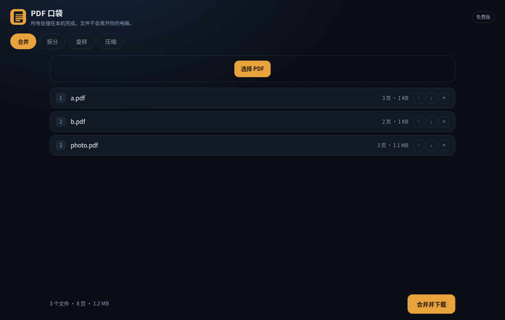
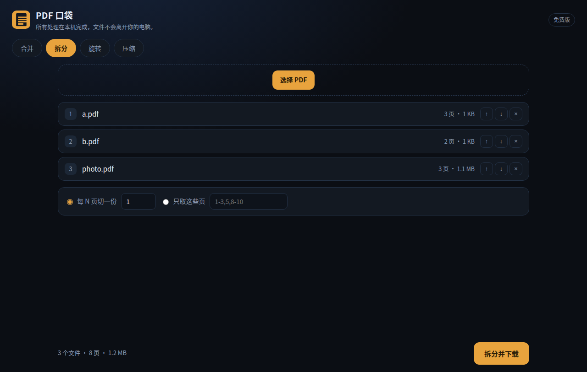
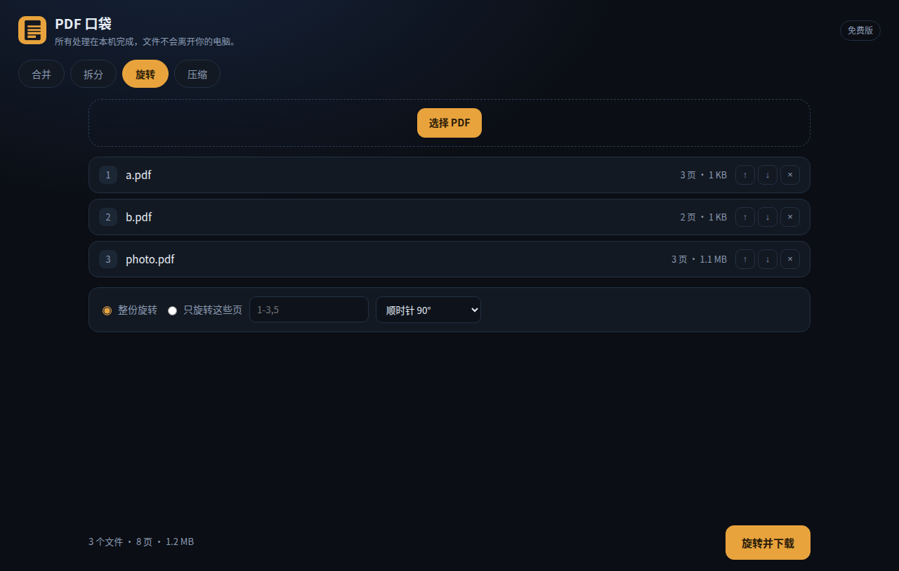
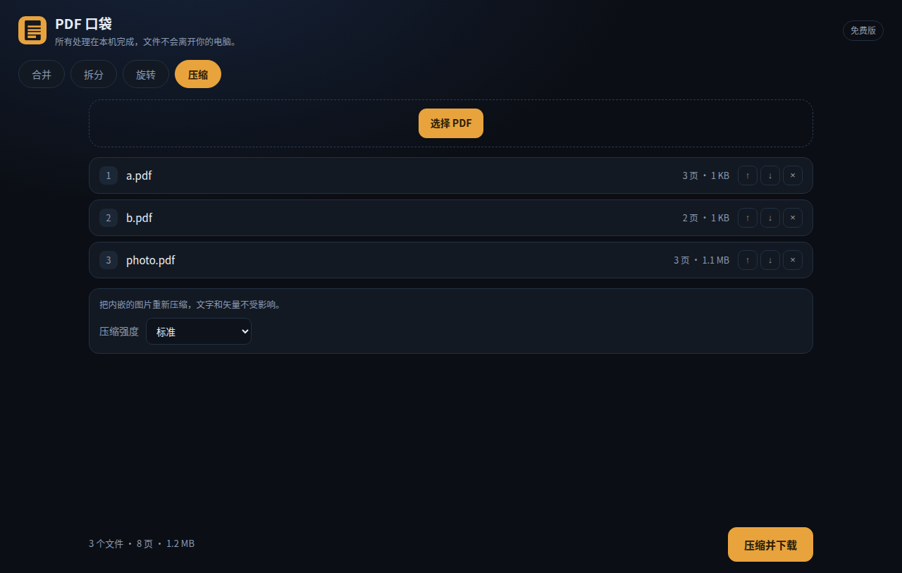
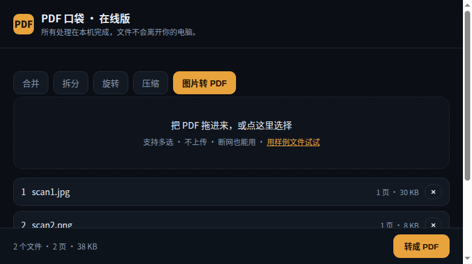
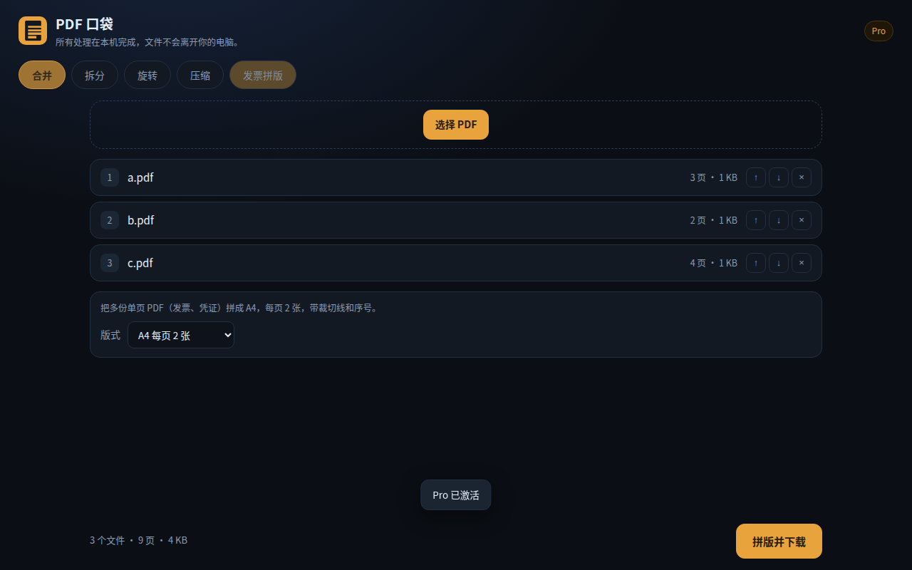
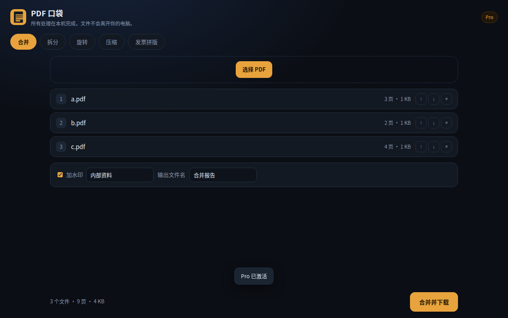

版本 1.0.3 ｜ 2026-11-13
在浏览器里把 PDF 合并、拆分、旋转、压缩——文件不上传，全部在你电脑上算完。
适合：经常要交材料、改简历、拼发票、发给别人又嫌太大的人。
安装（二选一）
pdfpocket-1.0.3-local.zip → 打开 edge://extensions（或 chrome://extensions）→ 打开右上角「开发人员模式」→「加载解压缩的扩展」→ 选解压出来的文件夹。用法
点工具栏里的橙色图标 → 打开工作台 → 把 PDF 拖进灰色虚线框（或点「选择 PDF」）→ 选一个标签页 → 点右下角按钮 → 文件自动下载。
第一次安装会弹一个引导页，四步图，看完就关掉，不会再出现。
| 位置 | 是什么 |
|---|---|
| 左上角 Logo | PDF 口袋 |
| 右上角「免费版」 | 当前套餐，点不开（没有登录、没有账号） |
| 四个标签页 | 合并 / 拆分 / 旋转 / 压缩 |
| 灰色虚线框 | 拖文件进来，或点「选择 PDF」 |
| 文件列表 | 每个文件显示页数与体积，右侧 ↑ ↓ 调顺序、× 移除 |
| 底部左侧 | 当前合计：几个文件、共几页、多大 |
| 底部右侧橙色按钮 | 执行（按钮文字跟着标签页变） |

用途：把多个 PDF 拼成一个（简历+作品集、多张发票、扫描件拼接）。
步骤
merged.pdf。细节

用途：把一份大 PDF 拆成若干份（按章节、按页数、把某几页单独拿出来）。
两种模式（单选）
| 模式 | 怎么用 | 结果 |
|---|---|---|
| 每 N 页切一份 | 填数字，比如 2 | 每 2 页一个文件：part-01.pdf、part-02.pdf… |
| 只取这些页 | 填页码，比如 1-3,5 |
一个 extracted.pdf，只含这 4 页 |
页码写法
1-3,5 → 第 1、2、3、5 页2,4,6-8 → 支持逗号混写3-1）会提示格式不对细节

用途：扫描件方向歪了、手机拍的横过来了。
步骤
1-3,5）。rotated.pdf。细节

用途：材料超过上传限制（常见 10MB / 20MB）、邮件发不出去。
步骤
compressed.pdf。三档的区别
| 档位 | 图片最长边 | JPEG 质量 | 什么时候用 |
|---|---|---|---|
| 轻 | 2200 px | 0.85 | 还要印出来 |
| 标准 | 1600 px | 0.72 | 屏幕看、发邮件（默认） |
| 强 | 1100 px | 0.55 | 只要能看清内容 |
实测：一份 3 页、含 2400×1800 照片的 PDF，从 1,203,664 字节 → 277,446 字节（-77%），肉眼几乎看不出差别。
细节（重要）

用途：手机拍的文件、扫描件截图、身份证照片，要交一份 PDF。
步骤 1. 拖入图片（JPG / PNG，可多选） 2. 自动切到「图片转 PDF」，点「转成 PDF」
细节
| 免费版 | Pro | |
|---|---|---|
| 单次文件数 | 3 | 不限 |
| 单次总页数 | 50 | 不限 |
| 批量拆分（一次导出多份） | ✗（只出第一份） | ✓ |
| 合并 / 拆分 / 旋转 / 压缩 | ✓ 全部可用 | ✓ |
| 价格 | 免费 | 一次买断 |
当前版本（1.0.3）先只上免费版，界面里没有购买入口——不会出现「点了没反应」的按钮。Pro 将在接上支付后开启。
哪也没去。
storage 权限）用来记住你选的档位这类偏好；隐私政策全文：https://zzehui.github.io/jobwatch/pdfpocket.html
Q：文件下载到哪了？ 浏览器默认下载目录（一般是「下载」文件夹），文件名就是上面写的那些。
Q：能处理带密码的 PDF 吗？ 不能。请先用阅读器去掉密码再拖进来。
Q：扫描版（图片型）PDF 能压缩吗？ 能，而且效果最明显——它里面全是图片。但不能 OCR，压完还是图片。
Q：能转 Word / 转图片吗？ 不能。这个工具只做「PDF 对 PDF」的四件事，不做格式转换。
Q：会很慢吗？ 纯文字文件几乎瞬间；100 页带图的大文件通常几秒到十几秒，取决于图片数量和电脑性能。处理时按钮会变成「处理中…」。
Q：安全吗？会不会偷偷上传？
扩展没有网络权限——它在系统层面就发不出去，你也可以在 edge://extensions 里点「详细信息」核对我申请的权限只有「存储」。
Q：为什么拆出来只有一个文件？ 免费版只导出第一份。Pro 才批量导出。
Q：能撤销吗？ 不能。所有操作都生成新文件，原文件不动——所以「撤销」就是把下载的新文件删掉。


加文字水印：勾「加水印」→ 填文字（中文可用）→ 合并。水印斜 30°、透明平铺，不挡正文；字号随页面大小自动缩放。
发票拼版：切到「发票拼版」→ 选多份单页 PDF → 一键拼成 A4，每页 2 张，中间带裁切虚线、左上角自动编号。适合报销、凭证归档。
自定义输出文件名：合并时填 报告，得到 报告.pdf。
这三项是 Pro 功能；免费版看不到入口。Pro 是 39 元一次买断（不是订阅）。
用着别扭、少了哪个功能、哪里看不懂——直接告诉我，我按你说的改。
微信：18964635809（同手机号，加好友请备注「PDF 口袋」）
扩展里也内置了入口：工作台页脚 「报告问题」 → 会把版本、浏览器、最近一次报错这类诊断信息列出来（扩展不联网，不会自动上传），你复制后连同出问题的那份 PDF 一起发我即可。
豆多科技（douduo）· 个人开发者 · 本页随扩展版本更新